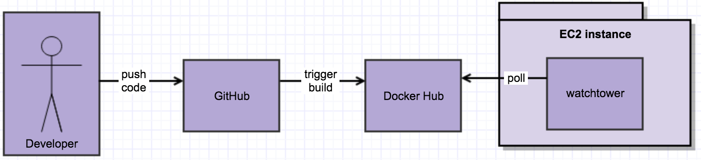

In this post, I’ll cover the approach I have taken to host my personal websites, including this one and windsorfamilyfarm.com.
From 2007- 2016, I was hosting my websites via shared hosting. You can host unlimited domains for about $5 / month, but you don’t have full access to the server. My hosting provider (as was typical) was primarily for Apache + PHP 5. You couldn’t use Node or PHP 7 or Docker there. But a bigger problem was the frequent downtime, which I noticed as soon as I started using Uptime Robot (free monitoring).
I host about 10 domains, but they all have low traffic and aren’t revenue-driving or otherwise critical sites. A lot of the traffic is coming from northern California.
I optimized for these things when looking for a solution:
Some things I did NOT optimize for:
My solution involves running each website in its own container(s). I pay for one Linux server and run all containers there. Some cloud providers allow you to pay directly for the containers that you run, but that has implications on pricing, learning curve, and vendor lock-in.
While I went with AWS / EC2, other cloud providers would be just as good. I chose AWS in part because that is the market leader, so that experience might be valuable in my day job.
Because we want requests for different domains to be handled by different containers, we need a reverse proxy that will route requests to the correct container. For this, I ran this Nginx reverse proxy container.
Because most of my websites use MySQL and there is some overhead to running MySQL, I run a single instance (one container) of MySQL, which is shared by all websites. Each website uses its own DB credentials and database.
Cloudflare sits between the user and my EC2 instance. Cloudflare serves a few purposes for me:
Deployment is initiated by a code push to GitHub, which triggers Docker Hub to build a Docker image from the code. One container running on the EC2 instance is watchtower which polls for new Docker images. When a new Docker image is found for a website, then watchtower will stop the container for the website, pull the new image, and start a new container.
I built a custom solution for backups for cost reasons, taking advantage of the server (NAS) that I run at my house.
This gives me 30 days of daily backups. One improvement I would like to make is to also have monthly backups going back 6-12 months.
I also have one snapshot of my EC2 instance stored on AWS, but it is a manual backup and is usually months old.
I use Uptime Robot to get alerts if any websites go down. I also have Uptime Robot monitoring a stats page and will be alerted if the server runs low on memory or if MySQL crashes.
Currently each container is run using “docker run” with various arguments such as mounted volumes and memory limits. These commands are not in source control. It would be great to put these in source control, either as-is or by using Docker Compose.
The websites have been up and required very little maintenance for the past two years.
Some pain points (mostly from the first year of operations):